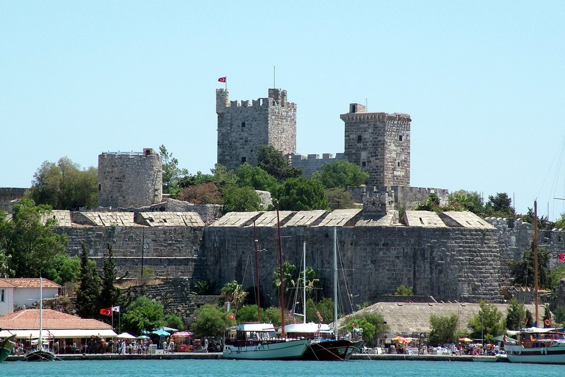

Turkey · Bodrum
Bodrum Castle audio guide
7 stops · 14 min · offline · plays as you arrive
The guide price is €1.99. This button is a placeholder. It does not open checkout and does not take payment. Email hello@getearwise.com.
A 7-stop offline audio guide to Bodrum Castle in Bodrum, recorded in 10 languages and designed to play as you arrive. It covers the Knights Hospitaller fortress, harbour towers, and Museum of Underwater Archaeology. Download once; you will not need a signal on the ground.
Stops
- 1
The Castle of St Peter
At the castle entrance, on the rocky peninsula between Bodrum's two harbours. This is stop 1 on the route.
- 2
The English Tower
The next story is about The English Tower.
- 3
The Museum of Underwater Archaeology
In the castle courtyard, at the entrance to the Museum of Underwater Archaeology. This is stop 3 on the route.
- 4
The Glass Wreck
In the Glass Wreck Hall (Serçe Limanı), where the remains of a medieval ship are shown with its cargo of glass. This is stop 4 on the route.
- 5
The Carian Princess
Inside the castle, in the Carian Princess Hall. This is stop 5 on the route.
- 6
The Uluburun shipwreck
In the hall dedicated to the Uluburun shipwreck. This is stop 6 on the route.
- 7
The Mausoleum
At the site of the Mausoleum, a short walk inland from the harbour. This is stop 7 on the route.
On the map
All 7 stop pins for this guide are marked. Open map